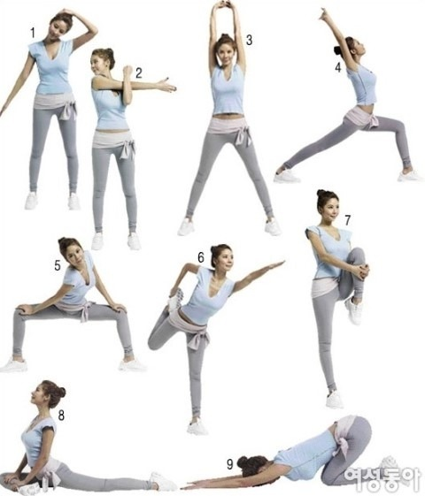
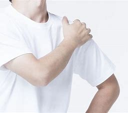

스트레칭에 대하여
스트레칭 개요

스트레칭은 신체 부위의 근육이나, 건, 인대 등을 늘여주는(신전시키는) 운동이다.
체육 활동을 시작하기 전에 이루어지는 준비운동도 스트레칭의 한 종류이다. 기본적으로 스트레칭은 자연스럽고 본능적인 행위로서, 이를테면 인간과 동물 모두 기지개를 켠다. 생체적인 이유로 기지개를 켜면 하품이 동반되는 경우도 있다.
스트레칭은 크게 두 가지로 나뉘는데 관절을 풀어주는 것과 근육을 늘리는 것이 있다. 따라서 스트레칭을 하면 관절의 가동범위 증가, 유연성 유지 및 향상, 혈액 순환 촉진, 상해 예방 등의 도움이 된다. 스트레칭의 일반적인 원리는 근육의 길이를 확장하여 자연 상태보다 근육을 늘여주는 것. 스트레칭의 효과는 건의 길이가 늘어남에 따라서 장력이 변하는 것과 관련된 것으로 알려져 있다. 무엇이든 같지만, 스트레칭도 과하면 효과도 없을뿐더러 심한 경우, 신경 손상까지도 일어날 수 있다.
스트레칭에 관한 주의사항
- 관절과 근육이 쭉 펴지는 느낌으로 10~15초 정도 자세를 유지만 해도 스트레칭의 효과는 충분하다. 반동을 줄 필요가 없다. 아니, 반동을 주면 안 된다. 스트레칭을 할 때에는 자신에게 맞는 관절 가동 범위 내에서 이루어져야 한다. 만약 지나친 반동으로 관절 가동 범위를 넘어가면 관절이 빠질 수 있다는 것. 반동으로 근육을 잡아당기면 근육이 파열되는 경우도 존재한다. 스트레칭 자세를 풀고도 아픔이 지속되면 그건 탈이 생겼다는 뜻이라 병원에 가야 한다.

- 목의 측면 등 약한 근육을 스트레칭 할 때에는 특히 더 조심해야 한다.
- 스트레칭 전 가벼운 러닝 등으로 약간의 체온을 올리고 심박 수를 높인 후에 스트레칭을 하는 편이 좋다고 한다.
- 반동을 주면 몸이 풀리지 않는다. 많은 사람들이 스트레칭을 할 때, 반동을 주면서 더 자극을 가하려고 하는데, 어떤 부위를 풀어주든 이는 절대 잘못된 방법이다. 그리고, 위험한 방법이다. 반동을 준다는 건, 유지할 수 있는 적정선을 넘어갔다가 적정선 아래로 들어왔다 다시 적정선을 넘어가는 것으로 이해하면 된다. 반동을 주다가 자칫 잘못하면 근육이 파열되는 경우가 발생한다. 근육의 적정 유연성을 넘겼기 때문에 일어나는 상황이다. 유지가 몸의 한계를 인지하고 버티는거라면 반동은 유지하는 것을 참기 힘들어 해당 부위의 근육을 이완 및 수축하는 것이다.이 말인 즉슨, 정작 해당 부위의 근육을 땡겨줘야 하는데 이를 하지 않는 것을 의미한다.
스트레칭 부위 목차